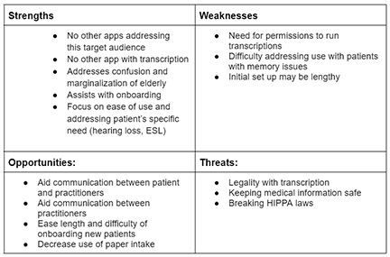
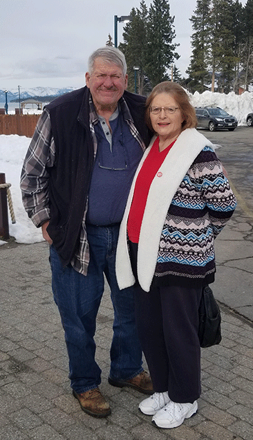

The healthcare system has seen a tremendous load with a large increase volume of patients to treat, changes in funding and staffing resulting in shorter office visits and an increased need for paperwork leading to higher complexity for patient’s to navigate the system. Coupling the increasing pace and complexity of the healthcare system with the physical impairments of the geriatric population often lead to inequities and mistreatment of this patient population. Issues like hearing loss, vision loss, memory impairments and mobility challenges leave these patients frustrated and fearful of not being able to independently navigate the overall cognitive and physical load required to receive quality medical care.
I plan to develop a mobile application that would target the geriatric population and address the difficulties that they face when navigating the healthcare system. This app would allow patients to input their medical history and medications list and have a QR Code or link that medical staff couple use to into their systems to ease lengthy onboarding, each of the patient’s practitioners would have their own tab so that they can visually keep contact/office directions/messaging organized and a transcription option that they could run during a live office visit to have a written recap that they could review after the session.
In running a SWOT analysis and a live patient interview, it does appear that there is value in producing an application to address this target population and this issue. There does not appear that there are any other applications with a similar target audience. Difficulty may arise when trying to gain permissions from practitioners to gather transcription during sessions and strict HIPPA laws need to be addressed to protect medical information. While there are some aspects that need further investigation, the investment in the design of this application would be beneficial to the geriatric patient population.
Interviewee: 70 y.o. woman matching perspective user in target audience
The app has been designed and prototyped through the use of Figma. To see the interactive prototype, please follow the link below.
MedHub Prototype